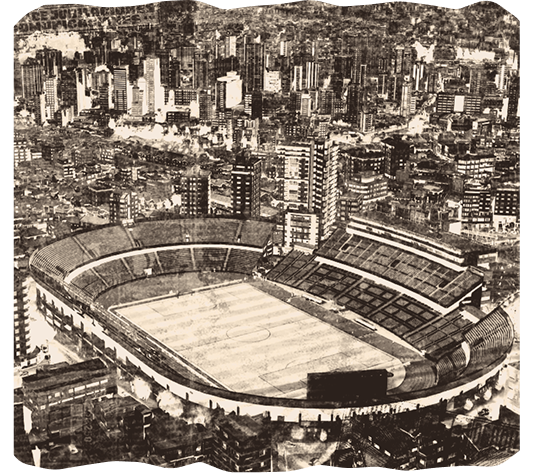
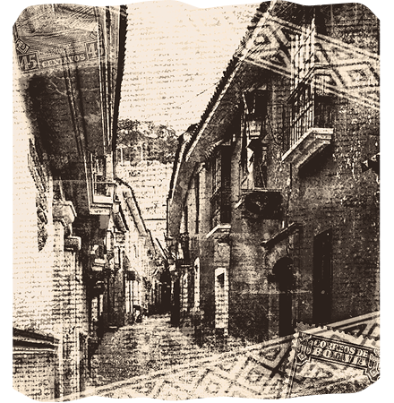

Leyendas y Mitos Sagrados

Encontrarás relatos que murmuraban lo real y lo imposible, donde deidades, espíritus y presencias divinas entre plegarias, milagros ayudaron o sentenciaron a quienes lo merecían. Son las historias en las que lo sagrado se entrelaza con la fe de generaciones paceñas.
Leyendas y Mitos Místicas
Encontrarás relatos que se deslizan entre lo real y lo imposible, donde criaturas antiguas, sombras errantes y fuerzas invisibles habitan un mundo irreal. Son las historias nacidas de lo que algunos juraron haber visto como de lo que otros inventaron para explicar lo que no comprendían.
Leyendas y Mitos Históricos
Encontrarás relatos que narran lo real y lo imposible entre calles empedradas, sucesos extraños y los nombres dentro de los registros del tiempo. Son las historias de personajes dejaron huellas verdaderas, aunque la memoria los contó con explicaciones donde no existían razones.